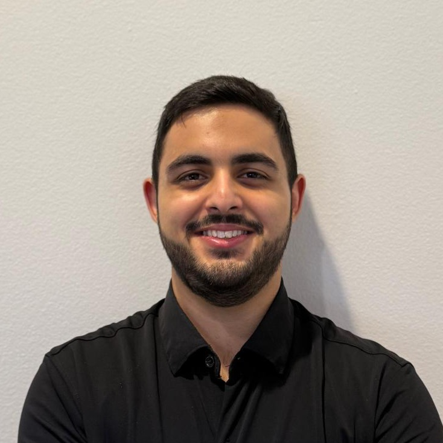
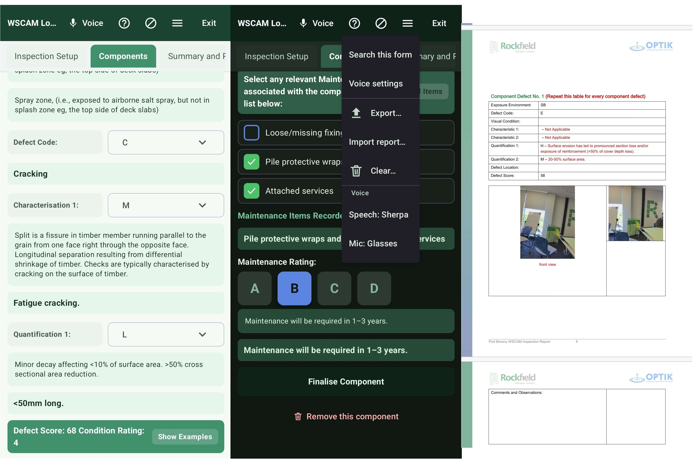
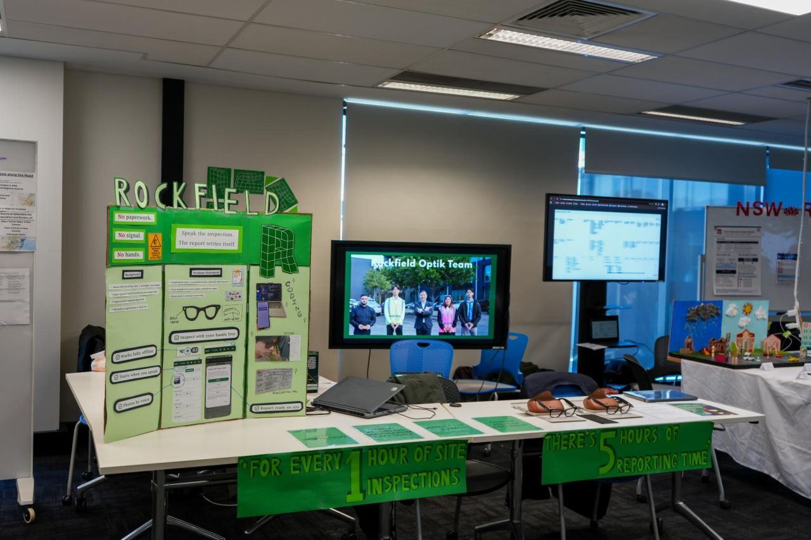

Bachelor of Software Engineering (Honours), University of Technology Sydney
I'm a final-year software engineering student at UTS, drawn to work where technology actually helps the person using it rather than just working on paper. Across my degree, the projects and roles I've enjoyed most are the ones where I can see exactly who benefits from what I build, whether that's an inspector, a tradie, or someone at an airport gate.
Alongside my degree I work in aviation ground services, assisting passengers through the airport and supporting flight crews. It's a job where you're solving problems in front of people, in real time, often under pressure and with someone who's stressed or in a hurry. I've learnt more about listening properly and staying calm from that than from anything else I've done, and I think it's shaped how I approach engineering just as much as any subject has, especially when it comes to explaining a technical decision to someone who just wants to know if the thing will work.
Most recently I completed a twelve-week engineering internship at Optik Consultancy, where I was tech lead on a hands-free field-inspection app for a client in asset inspection. Our team's driving problem statement was simple: for every hour of site inspection, inspectors were spending five hours writing it up afterwards. We paired Meta smart glasses with a custom Android app so inspectors could report hands-free while still on site, using voice commands to trigger the glasses' camera and capture, annotate, and file photos in real time. Leading the technical side of a team from five different engineering disciplines was the most valuable experience of my degree so far, and it's where I first got a real sense of what it means to own a system end to end rather than just a feature.
We finished the original project scope six weeks ahead of schedule, and I led the team through additional stretch goals that resulted in a workflow the client was proud to showcase at a tradeshow. That stretch phase taught me more about scoping and momentum than any single sprint before it did.
I'm bilingual in Arabic and English, and I've found that being able to adjust how you explain something matters as much in a technical meeting as it does at an airport gate. It's a skill I didn't expect to carry over so directly between the two halves of my life, but it consistently does.
I'm still working out exactly where I want to land, and I'd rather stay open to that than pretend otherwise. What I do know is that I want to be close to the people my work affects, and to keep learning from every opportunity I get. I'm looking for a graduate engineering role where I can apply technical problem-solving, clear cross-disciplinary communication, and a proactive approach to new challenges.
Optik Consultancy, Client: Rockfield Technologies
Tailored Workforce
Optik Consultancy Internship (Tech Lead, Student Consultant)
Honestly, I expected it to be a drag. Friends who had done the last round described it as something to get through for the sake of having one on your record, and said the value came down to luck: whether you got a good client and a good group. I planned to complete it, do it well, and move on.
The opposite. It became one of the most valuable experiences of my degree. We were building a hands-free field-inspection workflow, pairing Meta smart glasses with a custom Android app so inspectors could capture voice notes and photos on site, with no established way to do most of it, so we were genuinely solving problems rather than following a specification. I took on the tech lead role, and while I expected the build to fall mainly to the two of us from a software background, the team spanned five engineering disciplines, and everyone took ownership of their own part.

Most of the time went on getting the glasses-to-app connection to behave reliably once we moved from indoor demos to outdoor field tests, designing for someone whose hands are occupied and who cannot look at a screen, and making sure voice-captured data reached the client's Fulcrum system accurately and without dropouts in the field. Assumptions that held indoors sometimes failed on site, which meant iterating on the integration more than once. I was fortunate with my client and group, but speaking to other teams, I do not think the value came down to luck. Every group came away with something.

That a lot more is achievable than it first appears, provided the team is managed well, and the client and supervisors are genuinely engaged. We finished the original scope with six weeks remaining, and rather than easing off, we spent the rest of the internship working through stretch goals we had assumed were out of reach. Our client believed we could do it and kept encouraging us, so we delivered a workflow that noticeably cut the time inspectors spent manually typing up reports, and something we could properly showcase at the tradeshow. It was the clearest demonstration I have had that expectations set by the people around you shape what a team actually produces.
I can hold the whole picture of a system while working across a multidisciplinary team, and translate technical decisions for people who do not share my background. I demonstrated this by leading the technical side of a 12-week prototype, supporting teammates with problems outside their specialisms, and producing the technical handover the client received.
It broadened rather than narrowed what I am considering. Leading the technical side showed me I enjoy holding the whole picture and helping others get unstuck, which has moved product management onto my list. Sitting between the client, the supervisors and the team, deciding what to build next, was the part I found most engaging.
I would still be glad to work in full-stack development, and front-end remains what I enjoy most, though the market is difficult at the moment. What has changed is that I now weigh roles by how close they sit to the user and to the decisions about what gets built, rather than by the technology alone.
25 August 2026
Graduate Recruitment Team
Industrus Engineering
Re: Application for Graduate Engineering Program - Software Engineering
Dear Hiring Manager,
I am writing to apply for a graduate engineering position in the Industrus Engineering Graduate Program. As a penultimate-year Software Engineering student at UTS, I have led a multidisciplinary team on a client-facing prototype, built full-stack applications from concept to delivery, and worked in fast-paced, people-facing environments. I believe this combination has prepared me to contribute across your rotating project roles and divisions. Below I address the selection criteria.
During my internship at Optik Consultancy, our team was building a hands-free field-inspection workflow for a client using Meta smart glasses and a custom Android app. Several assumptions that had held up in indoor testing failed once we tested outdoors. Rather than smoothing over these gaps in our reporting, I made sure the technical handover documentation to the client accurately reflected what worked, what didn't, and why. This meant flagging shortcomings that could have made our results look less polished. The client appreciated the honesty and used the documentation to plan the next phase of the project with realistic expectations, reinforcing to me that accurate reporting matters more than a good-looking result.
As tech lead on the same internship project, I worked with a team spanning five engineering disciplines, most of whom did not share a software background. I was responsible for translating technical decisions, such as trade-offs in how the app handled unreliable field conditions, into terms the wider team and client could act on. I ran regular check-ins to explain progress and surface dependencies between hardware, software, and testing work. As a result, the team stayed aligned despite the technical gap between disciplines, and we delivered a workflow that met the client's needs.
While developing FixMate, a mobile app for tradies, with a university team, I helped design a feature that used AI to scrape live pricing data from Bunnings Warehouse and automatically estimate the materials and cost for a job from a customer's photos. This removed the need for a tradie to visit a site just to provide a quote. I also proposed letting tradies manually adjust the generated quote when they already held some materials, since a fixed estimate would not reflect their actual costs. This feature became a core part of the app and directly addressed a real inefficiency in how tradies currently price jobs.
On the ScamShark project, our team built an Android app that analyses the content of SMS messages to flag likely scams. I worked within a SCRUM structure, using Jira to manage tasks and version control to track changes across a cross-functional team of frontend, backend, and testing contributors. I also took part in regular client feedback loops, incorporating new information into our backlog each sprint. This kept the project's information organised and traceable even as requirements shifted, and the final app performed reliably against its intended use case.
In my role as a Passenger Services Agent, I regularly managed competing priorities in real time, assisting passengers with urgent needs while meeting strict compliance requirements under time pressure. Early on, I found it easy to get pulled between tasks without a clear order of priority. I developed a habit of quickly triaging which passenger or compliance issue needed immediate attention versus what could wait a few minutes, and checked in with supervisors when unsure. This let me maintain consistent service quality and full regulatory compliance, even during high-pressure periods such as flight delays.
As tech lead during my internship, I was initially expecting the technical build to fall mainly to the two team members with a software background. Instead, our five-discipline team took ownership of the whole prototype, and I coordinated their efforts across hardware, software, and testing. When we finished the original project scope six weeks early, I led the team through additional stretch goals rather than letting momentum drop, resulting in a workflow strong enough for the client to showcase at a tradeshow. This experience showed me that leadership on a technical team is often about keeping people aligned and motivated, not just contributing code.
I would welcome the opportunity to discuss how my experience fits the Graduate Program in an interview. Thank you for considering my application.
Kind Regards,
Ali Sabah Hasan